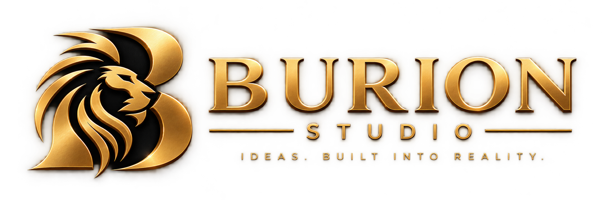
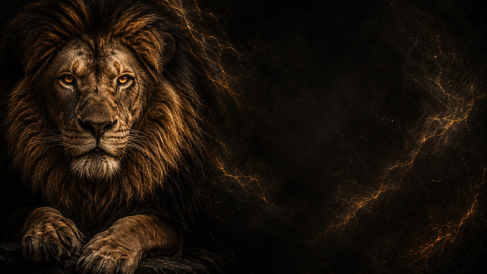
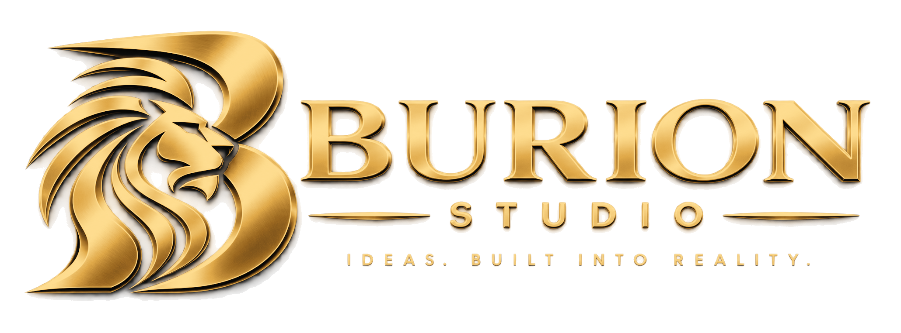
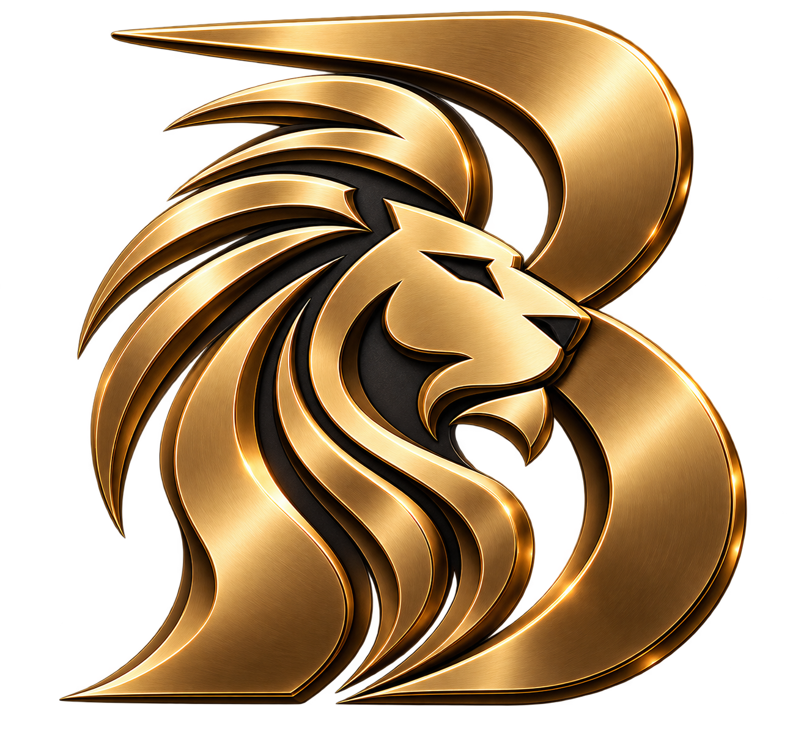

01◆
Oyunlar
Sıfırdan geliştirilen interaktif dünyalar, oyun sistemleri ve deneyimler.
→
BURION STUDIO
Fikirden yayınlanmaya kadar oyunlar, uygulamalar ve dijital deneyimler geliştiren bağımsız geliştirici.


NELER GELİŞTİRİYORUM
Sıfırdan geliştirilen interaktif dünyalar, oyun sistemleri ve deneyimler.
→Gerçek problemler ve gerçek insanlar etrafında tasarlanan faydalı dijital ürünler.
→Fikirlerin yaşayacağı web siteleri, platformlar ve dijital deneyimler.
→SEÇİLİ ÇALIŞMALAR
Burion Studio bünyesinde şu anda şekillendirdiğim ürün ve fikirlerden bir seçki.
Bilgi, hız ve ilerleme üzerine tasarlanmış rekabetçi bir quiz deneyimi.
Daha akıllı tarımsal kararları desteklemeye odaklanan dijital platform.
Bağımsız geliştirici ve yaratıcı stüdyonun dijital merkezi.

BURION STUDIO HAKKINDA
Merhaba, ben İrfan Aslan BÜRİAN.
Türkiye'de yaşayan bağımsız bir geliştiriciyim. Oyunları, uygulamaları ve dijital ürünleri sıfırdan geliştiriyorum.
Tüm süreci kendim yürütüyorum — kod, tasarım, sistemler ve aradaki her şey.
Burion Studio; üretmek, denemek ve fikirleri gerçek bir ürüne dönüştürmek için oluşturduğum stüdyom.
BİRLİKTE ÇALIŞALIM
Bir projen, fikrin veya iş birliği önerin varsa senden haber almak isterim.
support@burionstudio.com